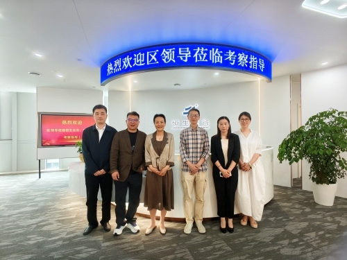
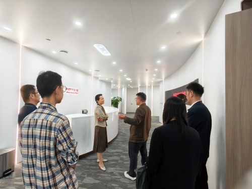
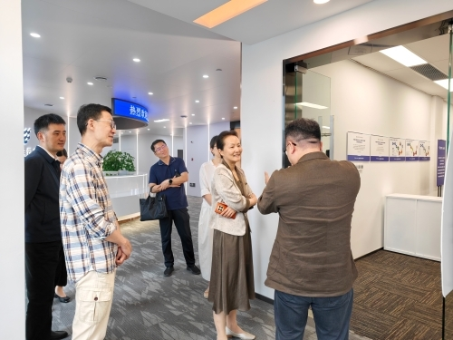
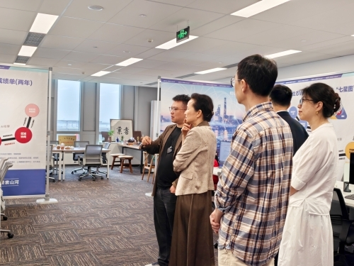
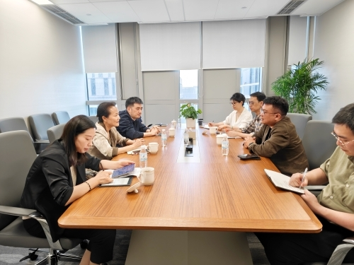
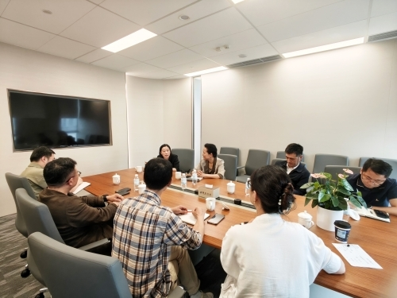
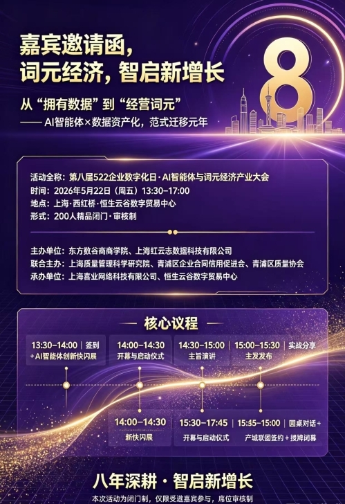
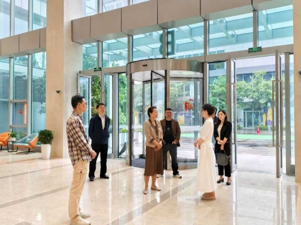

5月20日，上海市青浦区倪副区长一行莅临恒生云谷数字贸易中心考察调研，青浦区数据局副局长刘志斌、区经委副主任林玲等领导陪同。尽管当日阴雨连绵，政企双方交流热情不减。恒生云谷项目总经理张春以及入驻企业东方数谷商学院总经理尹东宏等核心负责人全程接待，各方围绕数字经济、数据产业发展、企业数字化生态建设等议题深入座谈，共商蓝图。

考察团一行首先实地参观了恒生云谷与杭州师范大学阿里巴巴商学院联合共建的阿里巴巴商学院上海人才培训中心，详细了解中心在数字人才培育、产教融合、技能实训等方面的建设成果与运营规划，对中心立足青浦、服务长三角的人才支撑定位给予高度肯定。

随后，领导一行走进东方数谷商学院。尹东宏总经理向考察团详细介绍了企业发展历程、核心业务布局、数字化服务能力及产业赋能成效，充分展示了东方数谷在企业数字化转型、数据资产化、AI智能体应用等领域的专业实力与行业影响力。

在座谈交流环节，政企双方围绕数据产业政策对接、企业诉求响应、场景开放合作等议题展开深入研讨。倪副区长对东方数谷提出的“数据飞地”模式、OPCU社区建设等创新理念给予高度评价，并就产业政策支持、资源对接、生态培育等方面提出指导意见，为企业下一步高质量发展指明方向。
倪副区长强调，青浦区将持续优化营商环境，支持恒生云谷、东方数谷等创新主体在乡村振兴、物业治理、制造业数字化转型等多场景中深化应用，共同培育新质生产力。

此次考察充分体现了青浦区政府对数字经济、数据产业发展的高度重视，以及对恒生云谷园区及入驻企业发展的关心与支持。恒生云谷与东方数谷商学院均表示，将以此次考察为契机，紧抓数字经济发展机遇，持续深耕数据产业与企业数字化服务，为青浦区数字经济高质量发展和长三角数字化生态建设贡献更大力量。

值得一提的是，此次区领导一行深入一线调研，正值“第八届522企业数字化日 · AI智能体与词元经济产业大会”召开前夕。该技术盛会由东方数谷商学院（上海虹云志数据科技有限公司）联合上海质量管理科学研究院等权 威单位主办，将于5月22日在恒生云谷数字贸易中心正式拉开帷幕。
大会以“词元经济，智启新增长”为主题，将首 发启动“十大数据品牌与人工智能管理体系认证”等三大权 威认证。

考察期间，倪副区长一行对东方数谷积极承办此类高规格、重实战的行业峰会给予高度认可与大力支持，期待本次盛会成为长三角企业数字化转型、AI产业创新升级的重要交流平台，助力区域数字经济高质量发展。

恒生云谷与东方数谷负责人表示，将全力以赴办好本届盛会，并在区政府政策指引下持续深化政企协同，为区域数字经济的高质量转型注入硬核澎湃的数字新动能！